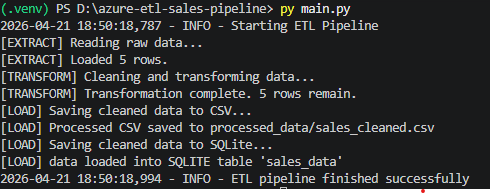
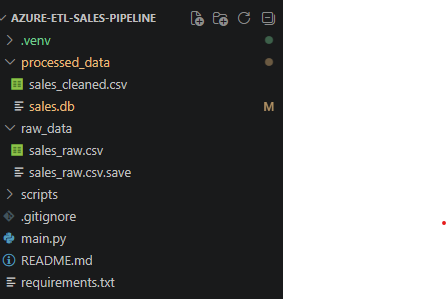
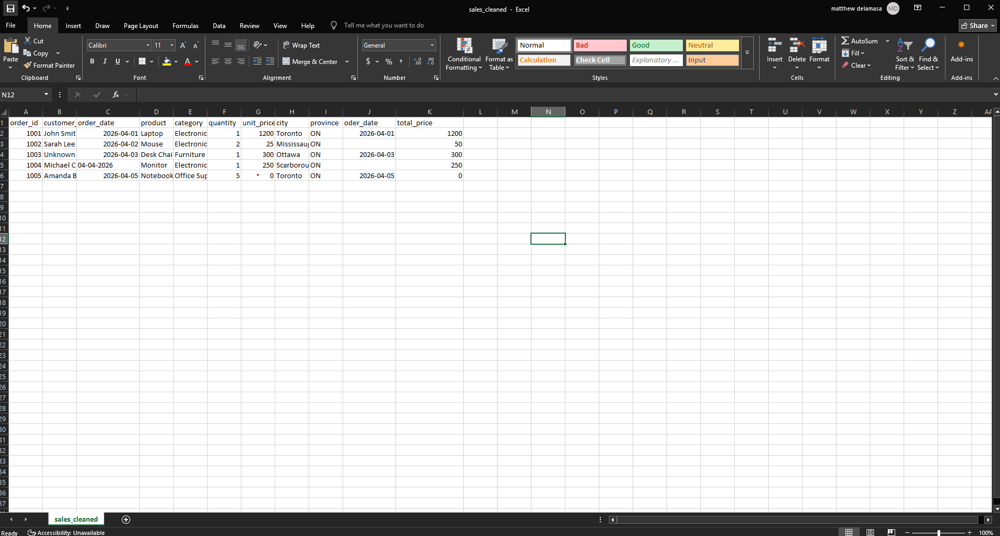
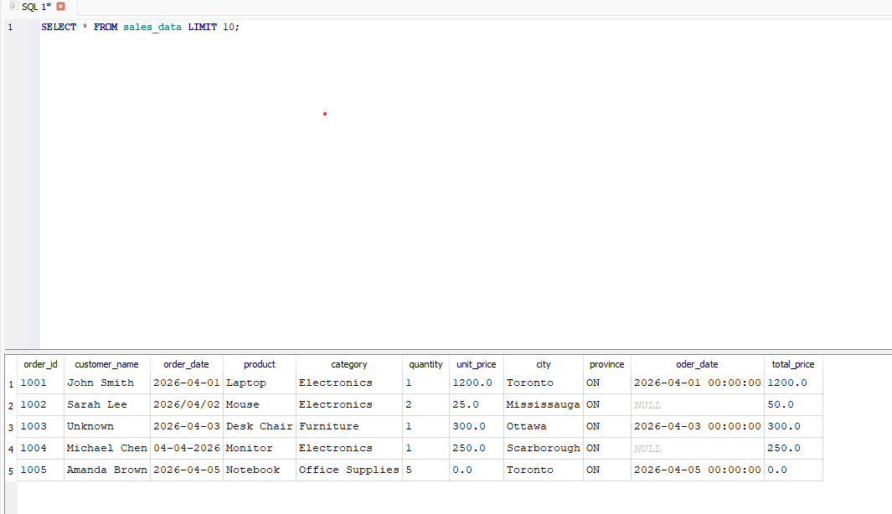

What it does
This pipeline extracts raw sales records from CSV, cleans and standardizes the data, creates derived fields, and loads the processed outputs into both flat-file and database formats.
Data Pipeline • Python • ETL
A Python ETL project that simulates an Azure-inspired data engineering workflow, extracting raw sales data, transforming it into a cleaner structured format, and loading the results into both a processed CSV and a SQLite database.
Overview
This pipeline extracts raw sales records from CSV, cleans and standardizes the data, creates derived fields, and loads the processed outputs into both flat-file and database formats.
I wanted a portfolio project that showed structured ETL thinking, modular scripting, and familiarity with data engineering concepts in a way that was easy to explain and easy to run locally.
Python, pandas, sqlite3, and logging, with folder organization inspired by Azure-style raw and processed data layers.
Project Media

Terminal output showing the pipeline execution from start to finish, including extraction, transformation, and load steps.

VS Code project structure showing raw_data, processed_data, scripts, main.py, and supporting files.

The cleaned CSV opened in a spreadsheet or editor to show the transformed output clearly.

SQLite table preview, database browser output, or your validation/check script confirming the loaded results.
Implementation
Raw sales data is read from a source CSV file stored in a dedicated raw data layer, mirroring a simplified ingestion stage in a data pipeline.
The transformation stage cleans missing values, standardizes formatting, and creates derived fields so the data is more reliable and usable downstream.
The cleaned data is written into a processed CSV for flat-file use and also loaded into SQLite to demonstrate structured storage beyond a single file.
The folder organization reflects a simplified Azure-style workflow, with raw and processed layers, modular ETL scripts, a main orchestration file, and logging used to simulate monitoring.
Results
A clear extract-transform-load flow with separated responsibilities and modular code organization.
Cleaning, formatting, derived field creation, and output validation in a portfolio-friendly data engineering project.
This project is easy to talk through because it shows both data movement and design structure, not just a single script.
Notes